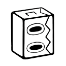

|  |
" THE WEB "
KIMA / フィギュア作家 Official Site |
| 一匹の小さな蜘蛛となり、自分だけの巣を作ろう。イメージ面では美しい蜘蛛の巣を目指す。より大きく、シンメトリーに作る事が高得点の鍵だ。キャプチャ面では、家の軒下に巣を張りより多くの虫を捕らえよう。蝶やトンボは高得点！ ある条件を満たすと、最強の家蜘蛛・アシダカグモを仲間に出来るらしい。家中のありとあらゆる虫を半殺しにして、ポイントに加えてくれるぞ！ さぁ、ベストスコアが出せたならネット接続で世界に発信。ちっぽけな蜘蛛から世界が広がる！
。 |
|